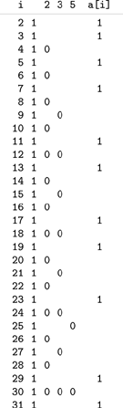
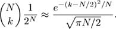
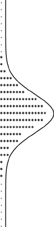

C++ Programming Robert Sedgewick - Princeton University Addison Wesley Professional Algorithms in C++, Parts 1–4: Fundamentals, Data Structure, Sorting, Searching, Third Edition C++ Programming Robert Sedgewick - Princeton University Addison Wesley Professional Algorithms in C++, Parts 1–4: Fundamentals, Data Structure, Sorting, Searching, Third Edition
3.2. Arrays
Perhaps the most fundamental data structure is the array, which is defined as a primitive in C++ and in most other programming languages. We have already seen the use of an array as the basis for the development of an efficient algorithm, in the examples in Chapter 1; we shall see many more examples in this section.
An array is a fixed collection of same-type data that are stored contiguously and that are accessible by an index. We refer to the ith element of an array a as a[i]. It is the responsibility of the programmer to store something meaningful in an array position a[i] before referring to a[i]. In C++, it is also the responsibility of the programmer to use indices that are nonnegative and smaller than the array size. Neglecting these responsibilities are two of the more common programming mistakes.
Arrays are fundamental data structures in that they have a direct correspondence with memory systems on virtually all computers. To retrieve the contents of a word from memory in machine language, we provide an address. Thus, we could think of the entire computer memory as an array, with the memory addresses corresponding to array indices. Most computer-language processors translate programs that involve arrays into efficient machine-language programs that access memory directly, and we are safe in assuming that an array access such as a[i] translates to just a few machine instructions.
A simple example of the use of an array is given by Program 3.5, which prints out all prime numbers less than 10000. The method used, which dates back to the third century B.C., is called the sieve of Eratosthenes (see Figure 3.1). It is typical of algorithms that exploit the fact that we can access efficiently any item of an array, given that item's index. The implementation has four loops, three of which access the items of the array sequentially, from beginning to end; the fourth skips through the array, i items at a time. In some cases, sequential processing is essential; in other cases, sequential ordering is used because it is as good as any other. For example, we could change the first loop in Program 3.5 to
for (i = N-1; i > 1; i--) a[i] = 1;
without any effect on the computation. We could also reverse the order of the inner loop in a similar manner, or we could change the final loop to print out the primes in decreasing order, but we could not change the order of the outer loop in the main computation, because it depends on all the integers less than i being processed before a[i] is tested for being prime.
To compute the prime numbers less than 32, we initialize all the array entries to 1 (second column), to indicate that no numbers are known to be nonprime (a[0] and a[1] are not used and are not shown). Then, we set array entries whose indices are multiples of 2, 3, and 5 to 0, since we know these multiples to be nonprime. Indices corresponding to array entries that remain 1 are prime (rightmost column).

We will not analyze the running time of Program 3.5 in detail because that would take us astray into number theory, but it is clear that the running time is proportional to
N + N/2 + N/3 + N/5 + N/7 + N/11 + . . .
which is less than N + N/2 + N/3 + N/4 + . . . = NHN ~ Nln N.
One of the distinctive features of C++ is that an array name generates a pointer to the first element of the array (the one with index 0). Moreover, simple pointer arithmetic is allowed: if p is a pointer to an object of a certain type, then we can write code that assumes that objects of that type are arranged sequentially, and can use *p to refer to the first object, *(p+1) to refer to the second object, *(p+2) to refer to the third object, and so forth. In other words,
*(a+i) and a[i] are equivalent in C++.
This equivalence provides an alternate mechanism for accessing objects in arrays that is sometimes more convenient than indexing. This mechanism is most often used for arrays of characters (strings); we discuss it again in Section 3.6.
Like structures, pointers to arrays are significant because they allow us to manipulate the arrays efficiently as higher-level objects.
Program 3.5. Sieve of Eratosthenes|
The goal of this program is to set a[i] to 1 if i is prime, and to 0 if i is not prime. First, it sets to 1 all array elements, to indicate that no numbers are known to be nonprime. Then it sets to 0 array elements corresponding to indices that are known to be nonprime (multiples of known primes). If a[i] is still 1 after all multiples of smaller primes have been set to 0, then we know it to be prime.
Because the program uses an array consisting of the simplest type of elements, 0–1 values, it would be more space efficient if we explicitly used an array of bits, rather than one of integers. Also, some programming environments might require the array to be global if N is huge, or we could allocate it dynamically (see Program 3.6).
#include <iostream.h>
static const int N = 1000;
int main()
{ int i, a[N];
for (i = 2; i < N; i++) a[i] = 1;
for (i = 2; i < N; i++)
if (a[i])
for (int j = i; j*i < N; j++) a[i*j] = 0;
for (i = 2; i < N; i++)
if (a[i]) cout << " " << i;
cout << endl;
}
|
In particular, we can pass a pointer to an array as an argument to a function, thus enabling that function to access objects in the array without having to make a copy of the whole array. This capability is indispensable when we write programs to manipulate huge arrays. For example, the search functions that we examined in Section 2.6 use this feature. We shall see other examples in Section 3.7.
The implementation in Program 3.5 assumes that the size of the array must be known beforehand: to run the program for a different value of N, we must change the constant N and recompile the program before executing it. Program 3.6 shows an alternate approach, where a user of the program can type in the value of N, and it will respond with the primes less than N. It uses two basic C++ mechanisms, both of which involve passing arrays as arguments to functions. The first is the mechanism by which command-line arguments are passed to the main programs, in an array argv of size argc. The array argv is a compound array made up of objects that are arrays (strings) themselves, so we shall defer discussing it in further detail until Section 3.7, and shall take on faith for the moment that the variable N gets the number that the user types when executing the program.
Program 3.6. Dynamic memory allocation for an array|
To change the value of the maximum prime computed in Program 3.5, we need to recompile the program. Instead, we can take the maximum desired number from the command line, and use it to allocate space for the array at execution time, using the C++ operator new[]. For example, if we compile this program and use 1000000 as a command-line argument, then we get all the primes less than 1 million (as long as our computer is big and fast enough to make the computation feasible); we can also debug with 100 (without using much time or space). We will use this idiom frequently, though, for brevity, we will omit the insufficient-memory test.
int main(int argc, char *argv[])
{ int i, N = atoi(argv[1]);
int *a = new int[N];
if (a == 0)
{ cout << "out of memory" << endl; return 0; }
...
|
The second basic mechanism that we use in Program 3.6 is new[], an operator that allocates the amount of memory that we need for our array at execution time, and returns, for our exclusive use, a pointer to the array. In some programming languages, it is difficult or impossible to allocate arrays dynamically; in some other programming languages, memory allocation is an automatic mechanism. Dynamic allocation is an essential tool in programs that manipulate multiple arrays, some of which might have to be huge. In this case, without memory allocation, we would have to predeclare an array as large as any value that the user is allowed to type. In a large program where we might use many arrays, it is not feasible to do so for each array. We will generally use code like Program 3.6 in this book because of the flexibility that it provides, although in specific applications when the array size is known, simpler versions like Program 3.5 are perfectly suitable.
Not only do arrays closely reflect the low-level mechanisms for accessing data in memory on most computers, but also they find widespread use because they correspond directly to natural methods of organizing data for applications. For example, arrays also correspond directly to vectors, the mathematical term for indexed lists of objects.
The C++ standard library provides the class Vector, an abstract object that we can index like an array (with optional automatic out-of-bounds checks), but that can also grow and shrink. We get the benefits of arrays, but can leave the problems of checking bad indices and managing the memory to the system. Since our focus in this book is so often on performance, we will tend to avoid exposure to such hidden costs by using arrays, while recognizing that our code could use or be used for Vectors, as well (see Exercise 3.14).
Program 3.7 is an example of a simulation program that uses an array. It simulates a sequence of Bernoulli trials, a familiar abstract concept from probability theory. If we flip a coin N times, the probability that we see k heads is 
The approximation is known as the normal approximation: the familiar bell-shaped curve. Figure 3.2 illustrates the output of Program 3.7 for 1000 trials of the experiment of flipping a coin 32 times. Many more details on the Bernoulli distribution and the normal approximation can be found in any text on probability, and we shall encounter these distributions again in Chapter 13. In the present context, our interest in the computation is that we use the numbers as indices into an array to count their frequency of occurrence. The ability of arrays to support this kind of operation is one of their prime virtues.
This table shows the result of running Program 3.7 with N = 32 and M = 1000, simulating 1000 experiments of flipping a coin 32 times. The number of heads that we should see is approximated by the normal distribution function, which is drawn over the data.

Programs 3.5 and 3.7 both compute array indices from the data at hand. In a sense, when we use a computed value to access an array of size N, we are taking N possibilities into account with just a single operation. This gain in efficiency is compelling when we can realize it, and we shall be encountering algorithms throughout the book that make use of arrays in this way.
We use arrays to organize all different manner of types of objects, not just integers. In C++, we can declare arrays of any built-in or user-defined type (i.e., compound objects declared as structures). Program 3.8 illustrates the use of an array of structures for points in the plane using the structure definition that we considered in Section 3.1. This program also illustrates a common use of arrays: to save data away so that they can be quickly accessed in an organized manner in some computation.
Program 3.7. Coin-flipping simulation|
If we flip a coin N times, we expect to get N/2 heads, but could get anywhere from 0 to N heads. This program runs the experiment M times, taking both N and M from the command line. It uses an array f to keep track of the frequency of occurrence of the outcome "i heads" for 0  i N, then prints out a histogram of the result of the experiments, with one asterisk for each 10 occurrences. i N, then prints out a histogram of the result of the experiments, with one asterisk for each 10 occurrences.
The operation on which this program is based—indexing an array with a computed value—is critical to the efficiency of many computational procedures.
#include <iostream.h>
#include <stdlib.h>
int heads()
{ return rand() < RAND_MAX/2; }
int main(int argc, char *argv[])
{ int i, j, cnt;
int N = atoi(argv[1]), M = atoi(argv[2]);
int *f = new int[N+1];
for (j = 0; j <= N; j++) f[j] = 0;
for (i = 0; i < M; i++, f[cnt]++)
for (cnt = 0, j = 0; j <= N; j++)
if (heads()) cnt++;
for (j = 0; j <= N; j++)
{
if (f[j] == 0) cout << ".";
for (i = 0; i < f[j]; i+=10) cout << "*";
cout << endl;
}
}
|
Incidentally, Program 3.8 is also interesting as a prototypical quadratic algorithm, which checks all pairs of a set of N data items, and therefore takes time proportional to N2. In this book, we look for improvements whenever we see such an algorithm, because its use becomes infeasible as N grows. In this case, we shall see how to use a compound data structure to perform this computation in linear time, in Section 3.7.
Program 3.8. Closest-point computation|
This program illustrates the use of an array of structures, and is representative of the typical situation where we save items in an array to process them later, during some computation. It counts the number of pairs of N randomly generated points in the unit square that can be connected by a straight line of length less than d, using the data type for points described in Section 3.1. The running time is O(N2), so this program cannot be used for huge N. Program 3.20 provides a faster solution.
#include <math.h>
#include <iostream.h>
#include <stdlib.h>
#include "Point.h"
float randFloat()
{ return 1.0*rand()/RAND_MAX; }
int main(int argc, char *argv[])
{ float d = atof(argv[2]);
int i, cnt = 0, N = atoi(argv[1]);
point *a = new point[N];
for (i = 0; i < N; i++)
{ a[i].x = randFloat(); a[i].y = randFloat(); }
for (i = 0; i < N; i++)
for (int j = i+1; j < N; j++)
if (distance(a[i], a[j]) < d) cnt++;
cout << cnt << " pairs within " << d << endl;
}
|
We can create compound types of arbitrary complexity in a similar manner: We can have not just arrays of structs, but also arrays of arrays, or structs containing arrays. We will consider these different options in detail in Section 3.7. Before doing so, however, we will examine linked lists, which serve as the primary alternative to arrays for organizing collections of objects.
Exercises |  3.10 Suppose that a is declared as int a[99]. Give the contents of the array after the following two statements are executed: 3.10 Suppose that a is declared as int a[99]. Give the contents of the array after the following two statements are executed:
for (i = 0; i < 99; i++) a[i] = 98-i;
for (i = 0; i < 99; i++) a[i] = a[a[i]];
| | 3.11 Modify our implementation of the sieve of Eratosthenes (Program 3.5) to use an array of (i) chars; and (ii) bits. Determine the effects of these changes on the amount of space and time used by the program. | | 3.12 Use the sieve of Eratosthenes to determine the number of primes less than N, for N = 103, 104, 105, and 106. | |  3.13 Use the sieve of Eratosthenes to draw a plot of N versus the number of primes less than N for N between 1 and 1000. 3.13 Use the sieve of Eratosthenes to draw a plot of N versus the number of primes less than N for N between 1 and 1000.
| | 3.14 The C++ standard library includes the Vector data type as an alternative to arrays. Find out how to use this data type on your system, and determine the effect on the runtime when you replace the array in Program 3.5 by a Vector. | |  3.15 Empirically determine the effect of removing the test of a[i] from the inner loop of Program 3.5, for N = 103, 104, 105, and 106, and explain the effect that you observe. 3.15 Empirically determine the effect of removing the test of a[i] from the inner loop of Program 3.5, for N = 103, 104, 105, and 106, and explain the effect that you observe.
| | 3.16 Write a program that counts the number of different integers less than 1000 that appear in an input stream. | | 3.17 Write a program that determines empirically the number of random positive integers less than 1000 that you can expect to generate before getting a repeated value. | | 3.18 Write a program that determines empirically the number of random positive integers less than 1000 that you can expect to generate before getting each value at least once. | | 3.19 Modify Program 3.7 to simulate a situation where the coin turns up heads with probability p. Run 1000 trials for an experiment with 32 flips with p = 1/6 to get output that you can compare with Figure 3.2. | | 3.20 Modify Program 3.7 to simulate a situation where the coin turns up heads with probability λ/N. Run 1000 trials for an experiment with 32 flips to get output that you can compare with Figure 3.2. This distribution is the classical Poisson distribution. | | 3.21 Modify Program 3.8 to print out the coordinates of the closest pair of points. | | 3.22 Modify Program 3.8 to perform the same computation in d dimensions. |
|